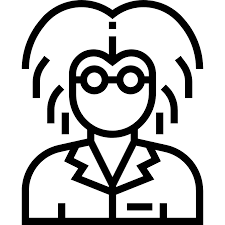

FUTURE HEADING
To become a good scientist
I am working as an assistant in the Computer Vision & Image Processing Lab.
Problem Solving
To work with computers, I knew that the foremost thing required was programming skills, so I took up Competitive Programming. Competitions had the kind of pressure that had always pushed me to grow quickly, and they informed me of my place in terms of skills. However, it was fairly unexpected that this time they also involved a good amount of problem solving and teamwork. Fortunately, I had my brilliant labmates joined in, and together we navigated our way through the International Collegiate Programming Contests, learned algorithmic approaches, and discussed quickly but comprehensively problems and solutions. A regional Bronze medal was our best achievement but the real best thing was how greatly improved my creative thinking, problem-solving, communication, and especially programming skills had become to help me explore Computer Vision.
Research
After the first competitive season, I was thrilled to be assigned as an assistant to my seniors' work in the sophomore year. It was a vehicle detection and classification problem. I first thought that I could just use graphical and geometric algorithms, but the different moving vehicles and lighting conditions combined made for an inexhaustible domain, so many heuristics or machine learning approaches were better match-ups. We first reduced the domain to only groups of moving blobs of pixels, then classifying them by training the highly parallelizable deep learning model called the neural decision tree. It was easy for single and separate vehicles to be classified, but there were problems in cases of overlapping vehicles that led to characteristically low-confidence inferences. However, it turned out that the search space after extracting moving blobs was so greatly minimized that we could just run an object detection algorithm on selected blobs whilst still retaining real-time speed, which was crucial to our multi-camera system. I was elated as we published our results. The experience left me genuinely motivated for more, and even with an idea to refine the machine’s finding of moving vehicles using the Gaussian Mixture Model. I feel happy I am pursuing what I like.
Afterwords
Despite the admittedly hard work, Computer Vision is no longer just my interest, it is a passion I am willing to pursue even beyond graduate school. I want to develop algorithms that can be applied in real-time processing for scene understanding and object detection, as these are, in my belief, the precursors to giving machines the ability to assist humans well.